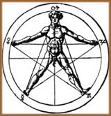

A humanidade sempre teve ao seu
redor um mundo de forças e energias ocultas que muitas
vezes não conseguia compreender nem identificar. Assim
sendo, buscou ao longo dos tempos, proteção a esses
perigos ou riscos que faziam parte de seu medo ao desconhecido,
surgindo aos poucos muitos objetos, imagens e amuletos, criando-se
símbolos nas tradições de cada povo.
O pentagrama está entre os principais e
mais conhecidos símbolos, pois possui diversas representações
e significados, evoluindo ao longo da história. Passou
de um símbolo cristão para a atual referência
onipresente entre os neopagãos com vasta profundidade mágica.
Origens e difusões
Num dos mais antigos significados do pentagrama,
os Hebreus designavam como a Verdade, para os cinco livros
do Pentateuco (os cinco livros do Velho Testamento, atribuídos
a Moisés). Na Grécia Antiga, era conhecido como
Pentalpha, geometricamente composto de cinco As.
O
pentagrama também é encontrado na cultura chinesa
representando o ciclo da destruição, que é
a base filosófica de sua medicina tradicional. Neste caso,
cada extremidade do pentagrama simboliza um elemento específico:
Terra, Água, Fogo, Madeira e Metal. Cada elemento
é gerado por outro, (a Madeira é gerada pela Terra),
o que dará origem a um ciclo de geração ou
criação. Para que exista equilíbrio é
necessário um elemento inibidor, que neste caso é
o oposto (a Água inibe o Fogo).
A geometria do pentagrama e suas associações
metafísicas foram exploradas por Pitágoras e posteriormente
por seus seguidores, que o consideravam um emblema de perfeição.
A geometria do pentagrama ficou conhecida como A Proporção
Divina, que ao longo da arte pós-helênica, pôde
ser observada nos projetos de alguns templos. Era um símbolo
divino para os druidas. Para os celtas, representava a deusa Morrighan
(deusa ligada ao Amor e a Guerra). Para os egípcios, era
o útero da Terra, mantendo uma relação simbólica
com as pirâmides.
Os primeiros cristãos tinham o pentagrama
como um símbolo das cinco chagas de Cristo. Desse modo,
visto como uma representação do misticismo religioso
e do trabalho do Criador. Também era usado como símbolo
da comemoração anual da visita dos três Reis
Magos ao menino Jesus. Ainda, em tempos medievais era usado como
amuleto de proteção contra demônios.
Os Templários,
uma ordem de monges formada durante as Cruzadas, ganharam grande
riqueza e proeminência através das doações
de todos aqueles que se juntavam à ordem; além de
grandes tesouros trazidos da Terra Santa. Na localização
do centro da Ordem dos Templários, ao redor de Rennes du
Chatres, na França, é notável observar um
pentagrama natural, quase perfeito, formado pelas montanhas que
medem vários quilômetros ao redor do centro. Ainda
é possível perceber, a profunda influência
do símbolo, em algumas Igrejas Templárias em Portugal,
que possuem vitrais na forma de Pentagramas. No entanto, Os Templários
foram
dizimados pela mesquinhez da Igreja e pelo fanatismo religioso
de Luis IX, em 1303. Iniciou-se assim a Idade das Trevas, onde
se queimavam, torturavam e excomungavam qualquer um que se opusesse
a Igreja. Durante esse longo tempo de Inquisição,
a igreja mergulhou no próprio diabolismo ao qual se opunha.
Nessa época o pentagrama simbolizou a cabeça de
um bode ou do diabo, na forma de Baphomet, o mesmo que
a Igreja acusou os Templários de adorar. Assim sendo, o
pentagrama passou de um símbolo de segurança à
representação do mal, sendo chamado de Pé
da Bruxa. Assim, a perseguição da Igreja fez
as religiões antigas se ocultarem na clandestinidade.
Ao fim da era das Trevas, as sociedades secretas
começam novamente a realizar seus estudos sem o medo paranóico
das punições da Igreja. Ressurge o Hermetismo, e
outras ciências misturando filosofia e alquimia. Floresce
então, o simbolismo gráfico e geométrico,
emergindo a Renascença
numa era de luz e desenvolvimento. O pentagrama agora, significa
o Microcosmo, símbolo do Homem de Pitágoras
representado através de braços e pernas abertas,
parecendo estar disposto em cinco partes em forma de cruz (O Homem
Individual). A mesma representação simboliza também
o Macrocosmo, o Homem Universal, um símbolo de
ordem e perfeição, a Verdade Divina. Agrippa
(Henry Cornelius Von de Agrippa Nettesheim), mostra proporcionalmente
a mesma figura, colocando em sua volta os cinco planetas e a Lua
no ponto central (genitália) da figura humana. Outras ilustrações
do mesmo período foram feitas por Leonardo da Vinci, mostrando
as relações geométricas do Homem com o Universo.
Posteriormente, o pentagrama também foi
associado aos quatro elementos essenciais (terra, água,
ar e fogo) mais o quinto, que simboliza o espírito (A
Quinta Essência dos alquimistas e agnósticos)
Na Maçonaria,
o Laço Infinito (como também era conhecido
o pentagrama, por ser traçado com uma mesma linha) era
o emblema da virtude e do dever. O homem microcósmico era
associado ao Pentalpha (a estrela de cinco pontas), sendo o símbolo
entrelaçado ao trono do mestre da Loja.
Com Eliphas
Levi (Alphonse Louis Constant), o pentagrama pela primeira
vez, através de uma ilustração, foi associado
ao conceito do bem e do mal. Ele ilustra o pentagrama microcósmico
ao lado de um pentagrama invertido (formando a cabeça do
bode, Baphomet).
O pentagrama voltou a ser usado em rituais pagãos
à partir de 1940 com Gerald Gardner. Sendo utilizado nos
rituais simbolizando os três aspectos da deusa e os dois
do deus, surgindo assim a nova religião Wicca.
Desse modo, o pentagrama retoma sua força como poderoso
talismã, ajudado pelo aumento do interesse popular pela
bruxaria e Wicca, que à partir de 1960, torna-se cada vez
mais disseminada e conhecida. Essa ascensão da Wicca, gera
uma reação da Igreja da época, chegando ao
extremo quando Anton
LaVey adota o pentagrama invertido (em alusão a Baphomet
de Levi), como emblema da sua Igreja de Satanás, e faz
com que a Igreja Católica considere que o pentagrama (invertido
ou não) seja sinônimo de símbolo do Diabo,
difundindo esse conceito para os cristãos. Assim naquela
época, os Wiccanos para se protegerem dos grupos religiosos
radicais, chegaram a se opor ao uso do pentagrama.
Até hoje o pentagrama é um símbolo
que indica ocultismo, proteção e perfeição.
Independente do que tenha sido associado em seu passado, ele se
configura como um dos principais e mais utilizados símbolos
mágicos da cultura Universal.
Por
Spectrum
Colaboração
de Vera Novo